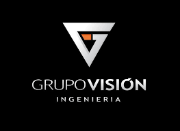

Silvia Juliana Camacho Obregón
Mi experiencia en los Sistemas Integrados de Gestión ( Calidad, ambiental y de sst) tanto en entidades públicas como privadas se ha logrado la certificación de las ISO de las diferentes campos con el objetivo de dar cumplimiento con la normatividad vigente colombiana.
Tengo 16 años de experiencia en el sector público y privado mediante el cual se logró las diferentes certificaciones con los entes certificadores ICONTEC Y BUREAU VERITAS.
Mi experiencia en los Sistemas Integrados de Gestión ( Calidad, ambiental y de sst) tanto en entidades públicas como privadas se ha logrado la certificación de las ISO de las diferentes campos con el objetivo de dar cumplimiento con la normatividad vigente colombiana.
Tengo 16 años de experiencia en el sector público y privado mediante el cual se logró las diferentes certificaciones con los entes certificadores ICONTEC Y BUREAU VERITAS.
Formación académica
TECNOLOGÍA AMBIENTAL Febrero de 2006 - Abril 2010 Unidades Tecnológicas de Santander Bucaramanga, Santander
INGENIERÍA AMBIENTAL Y DE SANEAMIENTO BÁSICO Febrero 2012- Diciembre 2015 Universidad de la Paz Barrancabermeja, Santander
ESPECIALIZACIÓN TÉCNICA EN SEGURIDAD Y SALUD OCUPACIONAL. Febrero de 2011 - Diciembre 2012 SENA Bucaramanga, Santander
ESPECIALISTA EN GERENCIA DE RIESGOS LABORALES SEGURIDAD Y SALUD EN EL TRABAJO ( SISTEMAS INTEGRADOS DE GESTION INTEGRAL DENTRO DEL PENSUL DE LA CARRERA SE EVIDENCIA LAS MATERIAS DE AUDITORIA – CREACION E IMPLEMENTACION DE SISTEMAS DE GESTION). Uniminuto- LICENCIA VIGENTE Bucaramanga, Santander
AUDITORIA AL SISTEMA DE GESTIÓN DE LA CALIDAD Junio de 2010- Duración de 40 Horas SENA Bucaramanga, Santander
AUDITORIA SISTEMAS INTEGRADOS DE GESTION Actualmente en curso SGS Bucaramanga,Santander
SISTEMAS DE GESTIÓN AMBIENTAL. Julio de 2010- Duración de 40 Horas Unidades Tecnologicas de Santander Bucaramanga, Santander
MIPG Abril 15 de 2019 - Curso Función Publica Bogotá D.C
DIPLOMADO DE VIVEROS FORESTALES II Diciembre 2010- Duración de 30 Horas Instituto Tecnológico Sistemas Siglo XXI Bucaramanga, Santander
DIPLOMADO DE VIVEROS FORESTALES Octubre 2009- Duración 119 Horas Instituto Tecnológico Sistemas Siglo XXI Bucaramanga, Santander
CURSO EVALUACIÓN DE IMPACTOS AMBIENTALES PARA LA APLICACIÓN DE MEDIDAS DE MANEJO Noviembre 20 Noviembre del 2015 40 Horas SENA Bucaramanga, Santander
CURSO DE OPERACIÓN DE POTABILIZACIÓN DE AGUAS Duración 50 Horas SENA
CURSO QUÍMICA Y TRATAMIENTO DE AGUAS (CURSO TEÓRICO-PRÁCTICO DE TÉCNICAS EXTRACCIÓN MUESTRAS) 07-09-2012 Universidad Industrial de Santander Bucaramanga, Santander
COORDINADOR DE ALTURAS Septiembre 2 del 2016-Duración 80 Horas SENA Bucaramanga, Santander
TOMA DE MUESTRAS DE CONCRETO FRESCO, ASENTAMIENTOS Julio 2018 SGS CONTECON URBAR Bucaramanga, Santander MANEJO DE CONFLICTOS 29 de Agosto 2016 - Duración 30 Horas SENA Bucaramanga, Santander
TECNICAS DE EXTRACION DE MUESTRAS ( AGUAS) UNIVERSIDAD INDUSTRIAL DE SANTANDER Bucaramanga,Santander
UNIVERSIDAD INDUSTRIAL DE SANTANDER Estudiante de Ingles - Nivel A1 Bucaramanga,Santander
POLITECNICO COLOMBIANO Interventoría y Proyectos Bogotá, Colombia
Actividades realizadas
*Diseño e implementación de los sistemas de gestión ( calidad,ambiental,sst)
*Ejecutar la implementación, ejecución de las normas iso 9001, iso 14001 iso 18001 de la organización para la certificación del sistema de gestión de calidad, ambiental, seguridad y salud en el trabajo.
*Prestar apoyo técnico en todas las actividades relacionadas con la implementación, mantenimiento, evaluación y mejora de los Sistemas de Gestión Ambiental, y de calidad.
*Liderar la implementación del programa de sostenibilidad ambiental, los controles operacionales, los simulacros ambientales, las inspecciones planeadas y las capacitaciones y sensibilizaciones en materia ambiental y de energía, de calidad dentro de las organizaciones.
*Programar, realizar y documentar las visitas de verificación y/o auditorías internas
*Reportar oportunamente los resultados de la medición, análisis, evaluación de los indicadores de desempeño ambiental y energético y asegurar la conservación de la información documentada como evidencia de los resultados.
*Diseñar e implementar programas para controlar los aspectos ambientales generados por las actividades de la interventoría que incluyan inducción y capacitación al personal de la interventoría en temas ambientales.
*Capacitar a todo el personal del contrato con el objetivo de la toma de consciencia y minimizar los impactos ambientales dentro de la construcción.
*Mantenimiento de los SGC,,ambiental de la organización para certificaciones con el incontec
*Premio Ambiental enfocado a la parte hospitalaria por las buenas prácticas ambientales.
*Determinar y hacer cumplir los requisitos enfocados al cliente por medio de encuestas de satisfacción y a los proveedores.
*Realización de PMA - Fichas Ambientales, Manual de Residuos Sólidos, Peligrosos para minimizar los impactos dentro de la obra con la ayuda de las directrices de la UNIVERSIDAD INDUSTRIAL DE SANTANDER.
*Realización del Plan de Residuos Sólidos del proyecto, Manuales de trampas de grasas para el mantenimiento y control.
*Asegurar que la información documentada requerida por los sistemas de gestión ambiental y de energía sea reportada con oportunidad, calidad y pertinencia, en temas tales como aspectos e impactos ambientales, riesgos, oportunidades, contexto, revisión energética, insumos de revisión por la Dirección, planes de residuos, planes de contingencia y demás documentación requerida por los sistemas de gestión ambiental y de energía.
*Interventoría SISOMA en los proyectos de electrificación tanto en subestaciones como en líneas de transmisión.
Participación en certificaciones de:
Empresas
Organizaciones en las que he participado

